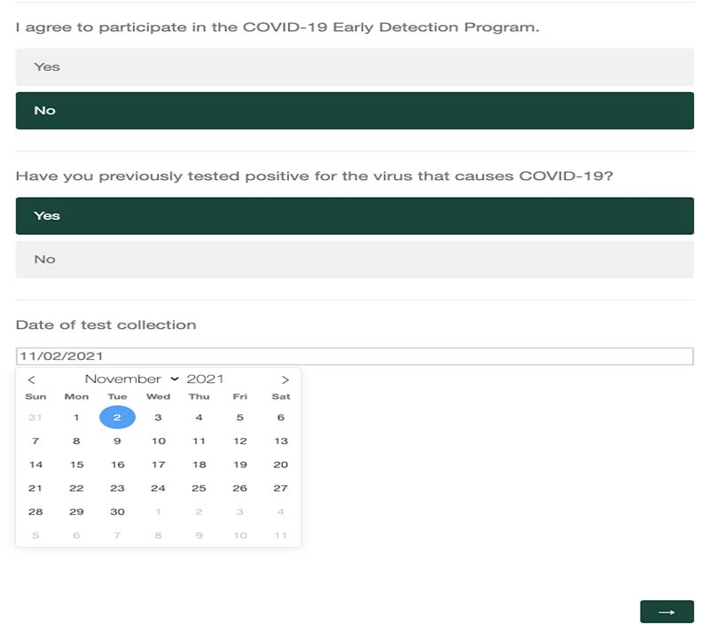
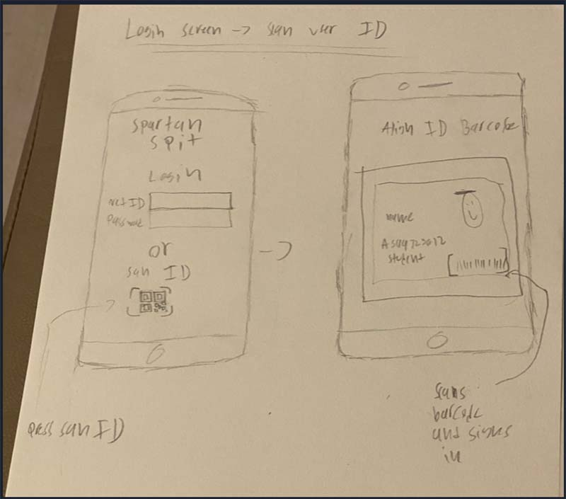
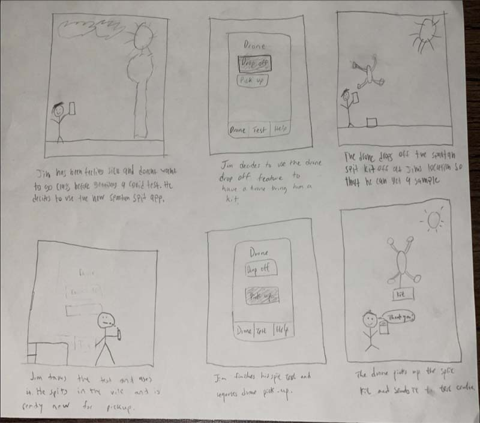

Improving Spartan spit
This project was assigned in our class to improve the usability of the Spartan Spit program here at Michigan State. The Spartan Spit early detection program was launched by Michigan State to help staff and students by providing them with Covid-19 testing kits that allow you to spit in them, drop off your sample at a designated drop off box, then await your results.
The Problem
Although the Spartan Spit program has been useful for staff and students, there were many usability issues that our class noticed while going through the process of using this program. Some of the problems included a survey and email system was used to sign up and wasn't easy to use, pick up and drop off locations werent easily accessible, and the process of using the spit kit wasn't the easiest.

Step 1: identify the problem
In this project I worked in a team with three fellow classmates to improve the Spartan Spit experience. Our assignment consisted of many different phases of the design process with the end goal of creating a high-fidelity prototype of our solution. The first step for our team was to identify what problems we wanted to tackle and improve with Spartan Spit. The first problem we identified is that the system for signing up and reciving your results was not user friendly. The second problem we identified is that some staff or students who live off campus might not be able to access the pick up and drop off locations for the Spartin Spit kit locations.
Step 2: proposed solutions
After identifying the problems we wanted to improve, we had to make two low fidelity prototypes of our solutions to the problem. First, we decided that an app would be a good idea to make the process of spartan spit easier and more usable for staff and students. Having all of the information you need in a simple and clean application would help improve the process of signing up for spartan spit and getting your test results. The second problem we identified the system for picking up and dropping off the spartan spit kits had problems. These problems included being hard to find, hard to access if you lived off campus, and if you think you might have Covid-19 and want a test you have to go on campus and possibly expose other students and staff. A solution to this problem we proposed is a "wizard of oz" drone system that will drop off and pick up your testing kits from if you live off campus.
Step 3: sketching our ideas

Our team came up with some intital sketches for the application. The sketch above I made shows an idea for a login in screen for the new app that has a MSU Net ID login feature along with a scan your student ID feature for easy login process.

This is a story board our team made of the process of using the proposed drone pick up and drop off of the Spartan Spit testing kit. The idea is that from your off campus apartment or home, you can request a drone from the app to come to your location and pickup or drop off a test kit to you.
Step 4: making a low-fidelity prototype

Step 5: testing and Identify problems with our prototype
Step 6: Making a High fidelity interactive prototype
Resume
Click below to view my resume. it will also be available to download or you can view it on my linkedin page!